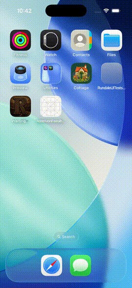

Invalid /wait durations are refused (issue 2327)
iOS Simulator (iPhone 17 Pro, iOS 26.4.1), Debug build of this branch with the real embedded Rust engine; not a physical iPhone. Simulator recording of a scripted run, with holds for reading.
- /pause, then /debug clock: game time 07:05.
- /wait bananas: refused with "You can't wait: 'bananas' is not a number of minutes...".
- /debug clock: still 07:05, no time passed.
- /wait 30: "You wait for 30 minutes... It is now 07:35"; /debug clock shows 07:35.
